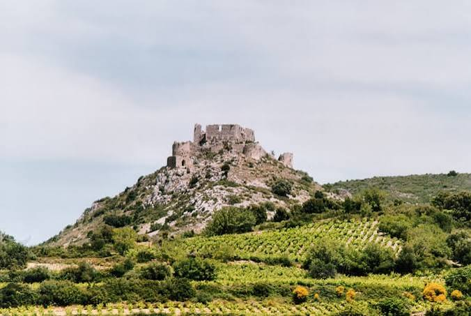

Château
d'Aguilar


⟹ Châteaux & Patrimoine cathare ⟸
À l'est de Tuchan, au cœur du vignoble du Haut Fitou, le château d'Aguilar occupe un modeste promontoire de 296 mètres d'altitude. Le lieu, alors nommé « Puy d'Aguilar », est mentionné dès 1020 dans le testament de Bernard Taillefer, comte catalan de Besalú, mais la première mention du château lui-même ne remonte qu'à 1240.

À partir du XIIe siècle, la forteresse appartient à la famille de Termes, vassale des Trencavel. Après la perte de son propre château de Termes en 1228, Olivier de Termes, fils de Raymond de Termes, fait d'Aguilar sa résidence principale : c'est probablement à lui que l'on doit la construction de la partie centrale du château et du village fortifié qui s'étend à son pied.
Passé un temps aux mains d'Alain de Roucy, lieutenant de Simon de Montfort, le château est restitué à Olivier de Termes en 1250 par Saint Louis, en récompense de sa participation à la croisade en Terre sainte. En octobre 1260, Olivier finit par vendre Aguilar au roi de France avec les villages de Termes, Davejean et Vignevieille : la forteresse devient définitivement royale en 1261.
Aguilar rejoint alors les « cinq fils de Carcassonne », aux côtés de Peyrepertuse, Quéribus, Termes et Puilaurens, formant la première ligne de défense du royaume face à la couronne d'Aragon. Le traité des Pyrénées de 1659, qui repousse la frontière plus au sud, lui fait perdre tout intérêt stratégique ; le château, classé monument historique en 1949, est aujourd'hui inscrit depuis le 26 juillet 2026 au patrimoine mondial de l'UNESCO au sein des « Forteresses royales du Languedoc ».
Des origines féodales entre Occitanie et Catalogne. La position d’Aguilar s’explique par la géographie politique des Corbières médiévales : le massif forme une zone de contact entre les principautés languedociennes et les possessions catalano-aragonaises. Le toponyme est généralement rapproché du latin aquilare, évoquant l’aigle et, par extension, un lieu élevé. Le « Puy d’Aguilar » apparaît en 1020 dans le testament de Bernard Taillefer, comte de Besalú. La seigneurie passe ensuite dans l’orbite des Trencavel et de leurs vassaux de Termes, l’une des grandes lignées des Corbières.
Olivier de Termes et le temps des faidits. Après la croisade albigeoise, Olivier de Termes incarne le destin complexe de la noblesse méridionale dépossédée. Encore enfant lors du siège de Termes en 1210, il devient un faidit, combat la domination capétienne et participe notamment à la tentative de reconquête de Carcassonne en 1240. Aguilar devient l’un de ses principaux points d’appui. Son parcours change ensuite profondément : réconcilié avec Louis IX, il accompagne le roi en Orient et acquiert une réputation de combattant et de diplomate. La restitution puis la vente d’Aguilar à la Couronne s’inscrivent dans cette progressive intégration de l’ancienne aristocratie occitane à l’ordre royal.
Une forteresse entièrement repensée par les Capétiens. Après l’acquisition royale de 1260-1261, les ingénieurs du roi transforment le site en poste frontalier. Le château associe un noyau supérieur polygonal, correspondant en partie au château seigneurial, à une vaste enceinte extérieure flanquée de six tours semi-circulaires. Cette double enceinte, adaptée au relief, multiplie les obstacles et les possibilités de tirs croisés. Citernes, bâtiments de garnison et dispositifs d’accès permettaient à une petite troupe de tenir durablement dans un environnement sec et isolé.
La frontière issue du traité de Corbeil. Le traité de Corbeil de 1258 entre Louis IX et Jacques Ier d’Aragon fixe durablement la frontière au sud des Corbières. Aguilar devient alors l’un des maillons du réseau de places royales souvent désigné, à l’époque moderne puis par l’historiographie, comme les « cinq fils de Carcassonne ». Avec Quéribus, Peyrepertuse, Puilaurens et Termes, il surveille les voies menant du Roussillon vers le Languedoc et complète la défense de la sénéchaussée de Carcassonne.
Du déclin militaire à la sauvegarde patrimoniale. La place reste entretenue et occupée pendant plusieurs siècles, mais son importance diminue à mesure que l’artillerie transforme la guerre de siège. Le traité des Pyrénées de 1659 annexe le Roussillon au royaume de France et repousse la frontière jusqu’aux Pyrénées : Aguilar cesse alors d’être un verrou de première ligne. Abandonné progressivement, le château devient une ruine monumentale au milieu des vignes. Son classement au titre des monuments historiques en 1949 ouvre une nouvelle période, celle de la consolidation, des recherches archéologiques et de la mise en valeur touristique.
Un « château cathare » au sens surtout mémoriel. Comme les autres grandes forteresses des Corbières, Aguilar est couramment présenté sous l’étiquette de « château cathare ». Celle-ci doit être nuancée : le site a bien appartenu à une famille liée aux résistances méridionales et au catharisme, mais l’essentiel des murailles visibles résulte des transformations seigneuriales puis surtout royales du XIIIe siècle. Aguilar témoigne donc autant de la conquête capétienne et de la construction de la frontière franco-aragonaise que de l’histoire religieuse de la croisade albigeoise.
Pour approfondir la lecture du monument, voici quelques repères historiques et architecturaux complémentaires.
Un château à deux visages : Aguilar permet de lire deux grandes phases de fortification : un noyau seigneurial associé à la famille de Termes, puis une enveloppe défensive renforcée après son entrée définitive dans le domaine royal en 1261. L’enceinte extérieure, flanquée de six tours semi-circulaires, traduit l’adaptation du site aux nouvelles exigences de la défense frontalière.
Olivier de Termes : La trajectoire d’Olivier de Termes éclaire les bouleversements du XIIIe siècle : héritier d’une famille opposée à la croisade, il connaît l’exil et la dépossession avant de se rapprocher de Louis IX, qu’il accompagne en Terre sainte. La vente d’Aguilar au roi marque le passage d’un château seigneurial à une place forte du pouvoir capétien.
Archéologie et paysage : Les campagnes de dégagement menées depuis 2016 dans les lices contribuent à restituer l’organisation du château et de ses abords. Le monument se distingue aussi par son implantation au milieu du vignoble du Haut Fitou : ici, la lecture du paysage aide à comprendre la surveillance des voies entre Corbières, Roussillon et Méditerranée.
Documentation complémentaire
Source de référence : consulter la ressource officielleChâteau de Quéribus : à une vingtaine de minutes de route, autre « fils de Carcassonne ».
Vignobles de l'AOP Fitou : les plus anciens vignobles d'appellation du Languedoc.
Village de Tuchan : et ses caves ouvertes à la dégustation.
Étang de Leucate : et le littoral méditerranéen, à une trentaine de minutes.